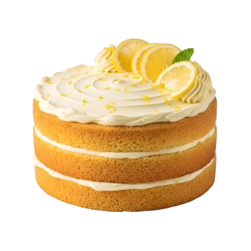
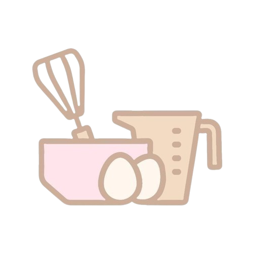
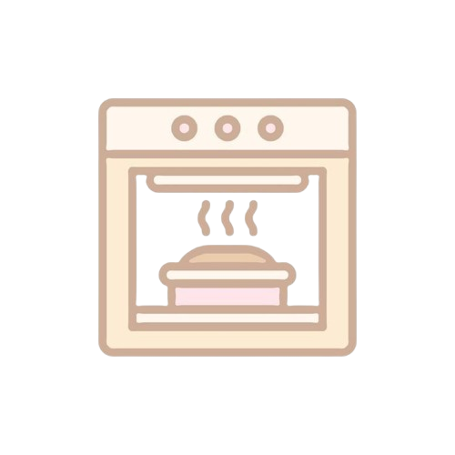

For the moment you've been waiting for how to bake this lemon cake?
Lemon Cake!

Total baking time

Baking ~15mins

Oven ~1h


Baking ~15mins

Oven ~1h
I did NOT invent the recipe or made a new recipe, you can find this recipe in different sites, pages and cooking books. I am just experimenting with web development on different style of pages, my intention is to show my level of creativity, skill and also things I enjoy like this lemon cake. Feel free to use the HTML and CSS code if you're interested.
The whole recipe is from Plated Cravings, again this is not my recipe all right reserved to Julia Foerster
More things in my gitHub account.

For the moment you've been waiting for how to bake this lemon cake?
Lemon cake ingredients
Lemon syrup ingredients
Lemon icing ingredients
Preheat oven to 350°F (177°C).
In a medium bowl combine the flour, baking powder, lemon zest, and salt. Set aside.
In the bowl of a stand mixer fitted with the paddle attachment (or using an electric mixer), cream the butter and sugar together at medium-high speed until pale and fluffy, about 4-6 minutes. Scrape the sides of the bowl as needed.
With the mixer running on low-speed, add the eggs one at a time, then beat in the vanilla extract and lemon juice. Beat on medium-high speed until combined.
With the mixer on low, add about one-third of the flour mixture and mix until almost combined, then add half the buttermilk and mix until just combined. Repeat with another third of flour mixture and then the last half of the buttermilk, ending with the last third of the flour. Beat until just incorporated.
Scrape the batter into the prepared loaf pan and bake for 45-55 minutes until the cake is golden brown and a toothpick comes out mostly clean with only a couple moist crumbs. Baking times vary, so keep an eye on yours.
Let the cake cool for about 15 minutes in the pan. Stir together the lemon juice and confectioners' sugar for the lemon syrup. Carefully invert the loaf pan, and transfer the cake to a cooling rack, then brush the syrup on the cake while it's still warm. Allow cake to cool completely.
When the cake is cooled, combine all the icing ingredients, start with 1 tbsp lemon juice and milk and add the remaining lemon juice as needed. The icing should be thick and not runny. Pour icing over cake and let dry before serving.